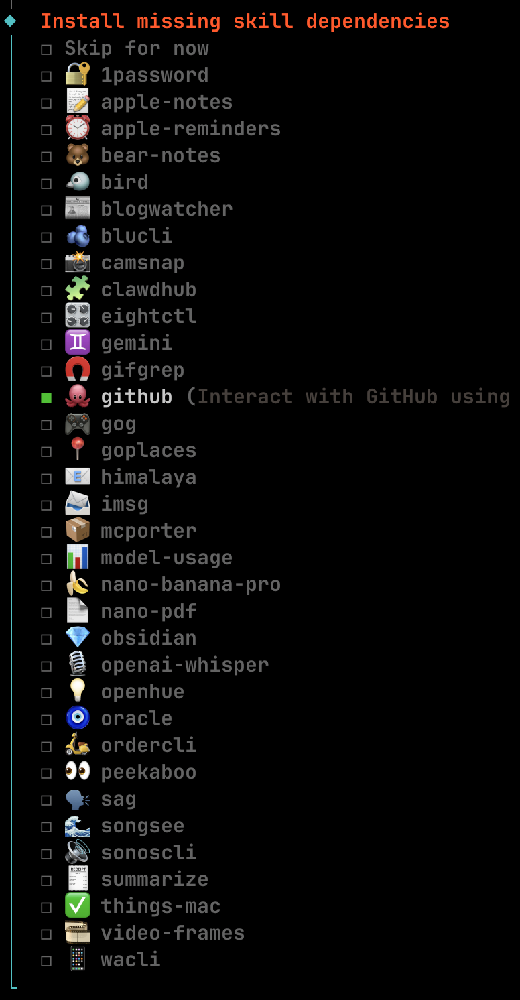
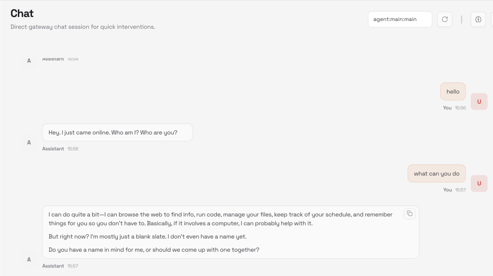
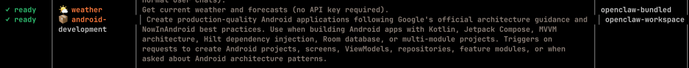

openclaw技术架构解析
0x00 openclaw是什么
• 自托管（self-hosted）的 AI Agent 框架 • 能部署在 自己的服务器 / 本地硬件 上运行 • 以类 Agent 的方式自动执行任务，而不是简单聊天 • 能集成多种大模型（Claude、GPT、Gemini 等） • 可通过消息平台（如 WhatsApp、Telegram、iMessage 等）与它交互 • 有自动重启、自我修复、插件扩展（skill）能力 • 类似自动化、可执行任务版的智能助手框架
0x01 openclaw的架构
总体架构：一个“常驻 Gateway + 多会话 Agent + Skills/Tools + 多端接入”的系统
可以把 OpenClaw 理解为：你自己机器上的 Agent OS，外面通过经过适配的IM软件的“聊天入口”来操控。它的核心是 Gateway（常驻服务），负责把消息 → 会话 → 模型推理 → 工具执行 → 回复 这一整条链路串起来。
整体架构
┌──────────────────────────────────────────────────────────┐
│ User / External World │
│ (Telegram / Discord / CLI / HTTP / Webhook) │
└───────────────────────────▲──────────────────────────────┘
│
│ inbound messages / events
│
┌───────────────────────────┴──────────────────────────────┐
│ Gateway │
│ ────────────────────────────────────────────────────── │
│ • Channel adapters (tg / dc / http / cli …) │
│ • bindings (peer / accountId → agentId) │
│ • agent registry (agents.list) │
│ • auth profiles / secrets │
│ • sandbox & tool policy enforcement │
└───────────────────────────▲──────────────────────────────┘
│ route to agent
│
┌───────────────────────────┴──────────────────────────────┐
│ Agent Runtime │
│ (per agent, isolated workspace + persona) │
│ │
│ ┌────────────────────────────────────────────────────┐ │
│ │ Workspace (agent local universe) │ │
│ │ │ │
│ │ IDENTITY.md → 我是谁（角色 / 边界） │ │
│ │ SOUL.md → 行为哲学 / 推理风格 │ │
│ │ AGENTS.md → ⭐ 多 agent 编排规则 │ │
│ │ TOOLS.md → 工具使用协议 │ │
│ │ BOOTSTRAP.md → 启动注入上下文 │ │
│ │ USER.md → 用户画像 │ │
│ │ HEARTBEAT.md → 周期性守护 / 自检 │ │
│ │ │ │
│ │ memory/ → 长期 / 短期记忆 │ │
│ │ skills/ → 能力描述（函数 / MCP 客户端） │ │
│ └────────────────────────────────────────────────────┘ │
│ │
│ ──────────────── Tool Invocation Layer ─────────────── │
│ • exec / apply_patch / web / fs │
│ • sessions_spawn (sub-agents) │
│ • MCP calls │
└───────────────────────────▲──────────────────────────────┘
│
│ spawn / call
│
┌───────────────────────────┴──────────────────────────────┐
│ Sub-Agent Sessions │
│ (research / coder / reviewer / ops …) │
│ │
│ • 独立 agentId / workspace / tools │
│ • 独立 sandbox 权限 │
│ • 异步执行 → result announce 回主 agent │
└───────────────────────────▲──────────────────────────────┘
│
│ tool reminding / execution
│
┌───────────────────────────┴──────────────────────────────┐
│ Tool & MCP Ecosystem │
│ │
│ • Built-in tools (exec, patch, web, fs) │
│ • MCP Servers (ADB / Frida / Git / Scanner / CI) │
│ • External services (cloud, repos, infra) │
└──────────────────────────────────────────────────────────┘
workspace目录结构
一个workspace定可以理解为对应的一个数字人, 这个“人”有id，有大脑，有记忆 ，有行为规则，有工具箱。并且定义了可以和哪些其他数字人进行交互。
~/.openclaw/workspace
AGENTS.md BOOTSTRAP.md HEARTBEAT.md IDENTITY.md memory skills SOUL.md TOOLS.md USER.md这些文件表示OpenClaw / Agent Runtime 的角色分工接口。可以把 workspace 看成一个「agent 的可执行人格与运行态目录」，这些文件分别对应 身份、启动、能力、记忆、心跳、用户态输入 等不同“通道”。
• IDENTITY.md —— “我是谁”，定义 agent 的身份、定位、边界 • SOUL.md —— “我怎么思考 & 行事”，定义 agent 的性格、思维方式、价值排序 • AGENTS.md —— 多 agent 编排的核心，定义 如何调用 / 派发其他 agent • TOOLS.md —— 工具使用协议，描述什么时候使用什么工具，什么时候不能使用，用前/用后应该注意什么 • skills/ —— 能力实现层（函数 / MCP / 插件） • BOOTSTRAP.md —— 启动注入，一次性的 • USER.md —— 用户画像 / 偏好，描述用户是谁 & 怎么协作 • memory/ —— 长期 & 短期记忆 • HEARTBEAT.md —— 周期性自检 / 守护逻辑
0x02 部署
curl -fsSL https://openclaw.bot/install.sh | bash
特殊配置
大部分模型需要特殊的网络环境才能访问，而Node 运行环境里的 fetch（通常是 Node 18+ 内置的 undici fetch）默认不会读取 HTTP_PROXY/HTTPS_PROXY 环境变量。所以即使设置了HTTP_PROXY/HTTPS_PROXY也不会走代理。需要对openclaw进行一些小的改动
npm install undici在openclaw启动脚本注入一段代码，我放在了~/.config/openclaw/proxy-bootstrap.mjs
import { setGlobalDispatcher, ProxyAgent } from "undici";
const proxy = process.env.OC_PROXY || process.env.HTTP_PROXY || process.env.HTTPS_PROXY;
if (!proxy) {
console.error("[proxy-bootstrap] no proxy set");
} else {
setGlobalDispatcher(new ProxyAgent(proxy));
console.error("[proxy-bootstrap] undici proxy =", proxy);
}export OC_PROXY="http://127.0.0.1:8080"
export NODE_OPTIONS="--import ~/.config/openclaw/proxy-bootstrap.mjs"这样，就可以使得所有请求经过自定义代理。在浏览器打开http://127.0.0.1:18789/

0x03 添加自定义skills
OpenClaw 的 skill = 一个可被 LLM 调用的工具目录.本质是：描述文件（SKILL.md） + 可执行入口（脚本/程序） + 可选权限声明
skill的默认目录在~/.openclaw/workspace/skills/,每个 skill 一个子目录，例如：
~/.openclaw/workspace/skills/
└── my-http-fetch/
├── SKILL.md
├── fetch.sh
└── fetch.py
➜ workspace git:(master) ✗ tree
.
├── AGENTS.md
├── BOOTSTRAP.md
├── HEARTBEAT.md
├── IDENTITY.md
├── memory
│ └── 2026-01-31-0712.md
├── skills
│ └── claude-android-skill
│ ├── assets
│ │ └── templates
│ │ ├── libs.versions.toml.template
│ │ └── settings.gradle.kts.template
│ ├── LICENSE
│ ├── README.md
│ ├── references
│ │ ├── architecture.md
│ │ ├── compose-patterns.md
│ │ ├── gradle-setup.md
│ │ ├── modularization.md
│ │ └── testing.md
│ ├── scripts
│ │ └── generate_feature.py
│ └── SKILL.md执行命令openclaw skills list, 可以看到配置的skill已生效

通过具体看skill代码，其实发现，skill是对能力的详细描述，能做什么，不能做什么，有什么权限，什么时候用。要写一个skill其实是很复杂的事情，不过我们可以通过LLM帮助我们写好skill。
有了skill后，就可以在最少量token实现和其他tools，mcp的互相调用。
• Skill 是 能力接口与使用语义的声明层• Tool / MCP Server 是 能力的执行实现层• Agent（LLM）负责在运行时把 目标 → Skill → Tool/MCP串起来
0x04 agent之间互相调用
在 OpenClaw 里，“多个 agent 互相调用”的主流实现不是让 agent 直接 import 彼此，而是通过 Session Tools（sessions_*） 做 跨会话消息编排：一个 agent 把任务发给另一个 agent 的 session，对方处理完再回消息.
核心工具：sessions_*（agent-to-agent 通信骨架）
OpenClaw 内置一组专门为“agent-to-agent”设计的小工具集：
• sessions_list：列出当前有哪些 session（包含 agent / channel / 元数据） • sessions_history：取某个 session 的对话历史（用于“读结果”） • sessions_send：给另一个 session 发消息（用于“派活”） • sessions_spawn：创建/拉起一个新 session（用于“起一个子 agent/子会话”）
这套工具的设计目标就是“少而不易误用”，用来让 agent 能发现其他 session、发消息、取结果
典型模式：Coordinator（主控）→ Worker（执行）
A. 主控发现可用 worker
主控调用 sessions_list 找到目标 worker 的 sessionId。
B. 主控派发任务
用 sessions_send 把任务发给 worker，例如：
“去总结日志”,“去跑一次 adb 检查”,“去做 web research（如果该 agent 有浏览权限）”
C. 收集结果
两种拿结果方式：让 worker 回消息给主控；主控用 sessions_history 主动拉 worker 会话最近输出再提取要点.
tips
把“回执协议”写进 system prompt。比如：coordinator 给 worker 的消息都以：TASK: 开头。附带 REPLY_TO_SESSION=<id>. worker 输出必须包含：RESULT:（摘要）, ARTIFACTS:（文件路径/链接）,NEXT:（是否需要追问）.这样 coordinator 用 sessions_history 抓取时非常稳，不会被闲聊污染。
0x05 如何编排多个agent
在 OpenClaw 里，编排多个agent通常分两层来做：入口路由（谁接这条消息） + 任务分解（一个 agent 拉起多个 sub-agent 干活）。
入口层：用 agents.list + bindings 把不同消息路由到不同 agent
可以在同一个 Gateway 里配置多个完全隔离的 agent（各自 workspace、agentDir、session store、auth profiles），然后用 bindings 把不同平台/账号/群聊映射到不同 agent。
agents.list：定义多个 agent（workspace、model、tools/sandbox 等）
bindings：把 inbound channel 的“来源（账号/群/peer）”绑定到某个 agent
执行层：用 sessions_spawn 把复杂任务拆给 sub-agent
当同一个入口 agent需要并行/分工时，就需要用到 subagents 机制。
1. 先用 agents_list 看当前会话允许 spawn 哪些 agentId（受 subagents.allowAgents 限制） 2. 再用 sessions_spawn 启动子会话去跑一个明确的 task，完成后会把结果返回主agent
下面给一个多agent的demo config， 默认放在~/.openclaw/gateway/config.json
{
"agents":{
"defaults":{
"workspace":"~/.openclaw/workspace-main",
// Default model (can be overridden per agent via agents.list[].model)
// String form is allowed: "provider/model"
"model":"openai/gpt-5.2",
// Sandbox defaults (can be overridden per agent via agents.list[].sandbox)
// mode: "off" | "non-main" | "all"
// workspaceAccess: "none" | "ro" | "rw"
"sandbox":{
"mode":"non-main",
"workspaceAccess":"rw",
"scope":"session"
},
// Defaults for subagent runs (optional; subagent inherits caller unless overridden)
"subagents":{
// If you want a different default model for spawned subagents, set it here.
// "model": "openai/gpt-5.2"
"archiveAfterMinutes":60
}
},
// ====== Multi-agent routing + per-agent overrides ======
"list":[
{
"id":"main",
"default":true,
"name":"Orchestrator",
"workspace":"~/.openclaw/workspace-main",
"agentDir":"~/.openclaw/agents/main/agent",
// The key: main is allowed to spawn these worker agent ids via sessions_spawn.agentId
"subagents":{
"allowAgents":["research","coder","reviewer"]
},
// Orchestrator usually needs "sessions_spawn" + some minimal runtime tools.
// Tool policy shape: allow/deny + profile; deny always wins.:contentReference[oaicite:1]{index=1}
"tools":{
"profile":"default",
"allow":[
// keep minimal; add more as you need
"sessions_spawn",
"agents_list"
],
"deny":[]
},
// You can choose to keep orchestrator less privileged too; sample keeps defaults.
"sandbox":{
"mode":"non-main",
"workspaceAccess":"rw",
"scope":"session"
}
},
{
"id":"research",
"name":"Research Worker",
"workspace":"~/.openclaw/workspace-research",
"agentDir":"~/.openclaw/agents/research/agent",
// A common pattern: research agent can browse/search but has no shell / write access.
"sandbox":{
"mode":"all",
"workspaceAccess":"ro",
"scope":"session"
},
"tools":{
"profile":"default",
"allow":[
// put your web tools here if you use them
"web_search",
"web_fetch"
],
"deny":[
"exec",
"apply_patch"
]
}
},
{
"id":"coder",
"name":"Coding Worker",
"workspace":"~/.openclaw/workspace-coder",
"agentDir":"~/.openclaw/agents/coder/agent",
// Coding worker: typically needs rw workspace + patch/apply tools; keep sandboxed.
"sandbox":{
"mode":"all",
"workspaceAccess":"rw",
"scope":"session"
},
"tools":{
"profile":"default",
"allow":[
"apply_patch",
"exec"
],
"deny":[]
}
},
{
"id":"reviewer",
"name":"Review Worker",
"workspace":"~/.openclaw/workspace-reviewer",
"agentDir":"~/.openclaw/agents/reviewer/agent",
// Reviewer: ro workspace, no shell, focus on reading + reasoning.
"sandbox":{
"mode":"all",
"workspaceAccess":"ro",
"scope":"session"
},
"tools":{
"profile":"default",
"allow":[],
"deny":[
"exec",
"apply_patch"
]
}
}
]
},
// ====== Bindings: route inbound messages to an agent ======
// Deterministic match order exists (peer/guild/team/accountId/*/default).:contentReference[oaicite:2]{index=2}
"bindings":[
// Example: route YOUR DM (peer id) to main orchestrator
{"match":{"peer":"your-peer-id-here"},"agent":"main"},
// Fallback: route everything else to main (channel-wide)
{"match":{"accountId":"*"},"agent":"main"}
]
}